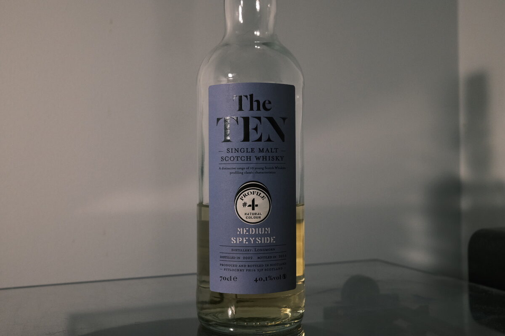

Longmorn 2002 "The Ten" LMDW/Signatory Vintage 40.1%
Apparently bottled by Signatory Vintage for La Maison du Whisky as part of “The Ten” series. Label reads: “A distinctive range of 10 young Scotch Whiskies profiling classic characteristics”. Intro range? Anyway, this is Profile #4, “Medium Speyside”. Not sure if Medium is apt…
Colour Light straw.
Nose Sour gummies, honey. Fresh milk.
Palate A bit of astringency up front. Actually, a lot. Very watery. Some biscuity notes, then back into astringency, oak. A sugary sweetness. Almost afraid to add water – no matter – eugh. Some grain notes.
Finish Moderate, alcoholic. Honey. Malt. Chocolate.
Comments Inoffensive, but insipid. Was this bottled as a joke? 68/100.

Posted by Dominic on 04 May 2021